· EEM301
EEM301 Sinyaller ve Sistemler I: Sürekli Zamanlı Fourier Serileri (CTFS), Özellikleri ve Gibbs Olayı
EEM301 – Sinyaller ve Sistemler I · 18.10.2005 · 16.10.2026
Bu yazı, Başkent Üniversitesi Elektrik-Elektronik Mühendisliği EEM301 Sinyaller ve Sistemler I dersinin "Fourier Series" (Fourier Serileri) sunumudur. Sunumu dersin öğretim üyesi Prof. Dr. Alper Uraz hazırlamış (Ekim 2005). Slaytların neredeyse tamamı görsel olduğu için içerik metne döküldü; formüller düz metne çevrildi, kısmi Fourier serisi grafikleri için slayt görselleri eklendi. Sunum İngilizce olduğundan içerik İngilizce aktarıldı. Orijinal PowerPoint dosyası yazının sonunda indirilebilir.
Sunumun konuları:
- Complex Exponentials as Eigenfunctions of LTI Systems
- Fourier Series of CT Periodic Signals
- CT Fourier Series Properties
- Periodic Convolution
- Symmetry Advantage
- Gibbs Phenomenon
The eigenfunctions φk(t) and their properties
(Focus on CT systems now, but the results apply to DT systems as well.)
φk(t) → System → λk φk(t), where λk is the eigenvalue and φk(t) the eigenfunction: eigenfunction in → same function out with a "gain".
From the superposition property of LTI systems:
x(t) = Σk ak φk(t) → LTI → y(t) = Σk λk ak φk(t)
Now the task of finding the response of LTI systems is to determine λk.
Complex exponentials as the eigenfunctions of any LTI system
CT: x(t) = e^(st) → h(t) →
y(t) = ∫ h(τ) e^(s(t−τ)) dτ = [∫ h(τ) e^(−sτ) dτ] e^(st) = H(s) e^(st) (eigenvalue H(s), eigenfunction e^(st))
DT: x[n] = zⁿ → h[n] →
y[n] = Σm h[m] z^(n−m) = [Σm h[m] z^(−m)] zⁿ = H(z) zⁿ
So, with H(s) = ∫ (−∞…∞) h(t) e^(−st) dt:
x(t) = Σk ak e^(sk t) → y(t) = Σk H(sk) ak e^(sk t)
and with H(z) = Σ (n = −∞…∞) h[n] z^(−n):
x[n] = Σk ak zkⁿ → y[n] = Σk H(zk) ak zkⁿ
What kinds of signals can we represent as "sums" of complex exponentials?
For now, focus on restricted sets of complex exponentials of magnitude 1:
- CT: s = jω — purely imaginary, i.e. signals of the form e^(jωt)
- DT: z = e^(jω), i.e. signals of the form e^(jωn)
⇒ CT & DT Fourier series (for periodic signals) and transforms.
CT complex exponential (sinusoid): x(t) = e^(st) at s = jω = e^(jωt) = cos(ωt) + j sin(ωt); s = jω ⇒ Re{s} = 0, Im{s} = ω.
DT complex exponential (sinusoid): zⁿ = (|z| e^(j∠z))ⁿ = |z|ⁿ e^(jωn), ω = ∠z, |z| = 1 ⇒ x[n] = e^(jωn) = cos(ωn) + j sin(ωn).
Fourier series representation of CT periodic signals
x(t) = x(t + T) for all t:
- the smallest such T is the fundamental period
- ω0 = 2π/T is the fundamental frequency
e^(jωt) is periodic with period T ⇔ ω = kω0. Hence
x(t) = Σ (k = −∞…∞) ak e^(jkω0t) = Σ ak e^(jk2πt/T)
- periodic with period T
- {ak} are the Fourier (series) coefficients, or spectral coefficients
- k = 0: DC; k = ±1: first harmonic; k = ±2: second harmonic
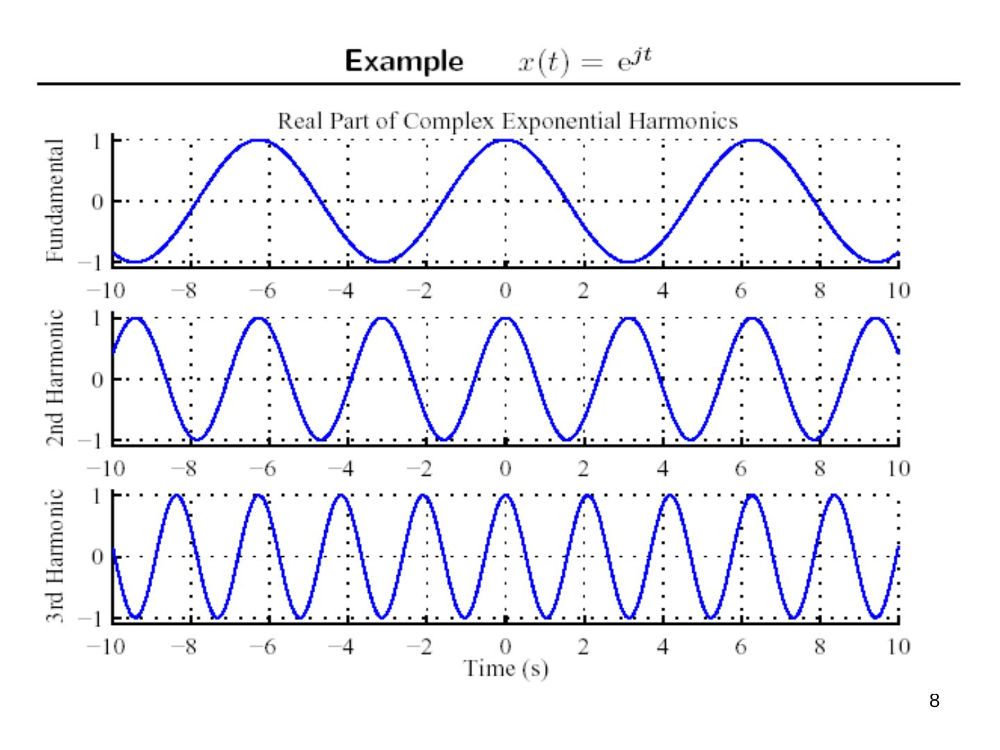
Question #1: how do we find the Fourier coefficients?
First, for simple periodic signals consisting of a few sinusoidal terms, use Euler's relation (memorize!):
x(t) = cos 4πt + 2 sin 8πt = (1/2)[e^(j4πt) + e^(−j4πt)] + (2/2j)[e^(j8πt) − e^(−j8πt)]
ω0 = 4π, T = 2π/ω0 = 2π/4π = 1/2
- a0 = 0 — no dc component
- a1 = 1/2, a−1 = 1/2
- a2 = 1/j, a−2 = −1/j
- a3 = 0, a−3 = 0, …
For real periodic signals there are two other commonly used forms:
x(t) = a0 + Σ (k = 1…∞) [αk cos kω0t + βk sin kω0t] or x(t) = a0 + Σ (k = 1…∞) γk cos(kω0t + θk)
Because of the eigenfunction property of e^(jωt), we will usually use the complex exponential form. A consequence is that we need to include terms for both positive and negative frequencies, e^(jkω0t) and e^(−jkω0t). Remember:
cos(kω0t) = (1/2)(e^(jkω0t) + e^(−jkω0t)), sin(kω0t) = (1/2j)(e^(jkω0t) − e^(−jkω0t))
The complete answer to Question #1 (given x(t), how to find ak?)
Suppose x(t) = Σ ak e^(jkω0t). (1) Multiply both sides by e^(−jnω0t), (2) integrate over one period:
∫T x(t) e^(−jnω0t) dt = ∫T (Σk ak e^(jkω0t)) e^(−jnω0t) dt = Σk ak (∫T e^(j(k−n)ω0t) dt)
(Here ∫T denotes the integral over any interval of length T, one period.) Next note the orthogonality:
∫T e^(j(k−n)ω0t) dt = T if k = n, 0 if k ≠ n; i.e. = T δ[k − n]
so ∫T x(t) e^(−jnω0t) dt = Σk ak T δ[k − n] = an T.
CT Fourier series pair (ω0 = 2π/T):
- x(t) = Σ (k = −∞…∞) ak e^(jkω0t) (synthesis equation)
- ak = (1/T) ∫T x(t) e^(−jkω0t) dt (analysis equation)
Shorthand: x(t) ↔FS↔ ak.
Alternative forms
Amplitude-phase. Since a−k = ak* for real x(t):
x(t) = Σ ak e^(jkωt) = a0 + Σ (k = 1…∞) ak e^(jkωt) + Σ (k = 1…∞) a−k e^(−jkωt) = a0 + Σ [(ak e^(jkωt)) + (ak e^(jkωt))*] = a0 + 2 Σ Re{ak e^(jkωt)} = a0 + 2 Σ |ak| Re{e^(j(kωt + θk))} = a0 + 2 Σ (k = 1…∞) Ak cos(kωt + θk)
where Ak ≜ |ak| and θk ≜ ∠ak is the complex phase angle of ak.
Trigonometric.
x(t) = a0 + 2 Σ Re{ak e^(jkωt)} = a0 + 2 Σ [Re{ak} cos(kωt) − Im{ak} sin(kωt)] = a0 + 2 Σ (k = 1…∞) [Bk cos(kωt) − Ck sin(kωt)]
where Bk ≜ Re{ak} and Ck ≜ Im{ak}.
Summary:
| Form | x(t) |
|---|---|
| Exponential | Σ (k = −∞…∞) ak e^(jkωt) |
| Amplitude-phase | a0 + 2 Σ (k = 1…∞) Ak cos(kωt + θk) |
| Trigonometric | a0 + 2 Σ (k = 1…∞) Bk cos(kωt) − Ck sin(kωt) |
ak = Ak e^(jθk) = Bk + jCk; Ak = √(Bk² + Ck²) = |ak|; θk = ∠(Bk + jCk) = ∠ak; Bk = Ak cos θk = Re{ak}; Ck = Ak sin θk = Im{ak}.
Examples
Periodic square wave
x(t) = 1 for |t| < T1, 0 for T1 < |t| < T/2, periodic with period T.
- For k = 0: a0 = (1/T) ∫ (−T/2…T/2) x(t) dt = 2T1/T — the DC component is just the average.
- For k ≠ 0: ak = (1/T) ∫ (−T1…T1) e^(−jkω0t) dt = −(1/(jkω0T)) e^(−jkω0t) from −T1 to T1 = sin(kω0T1)/(kπ), ω0 = 2π/T
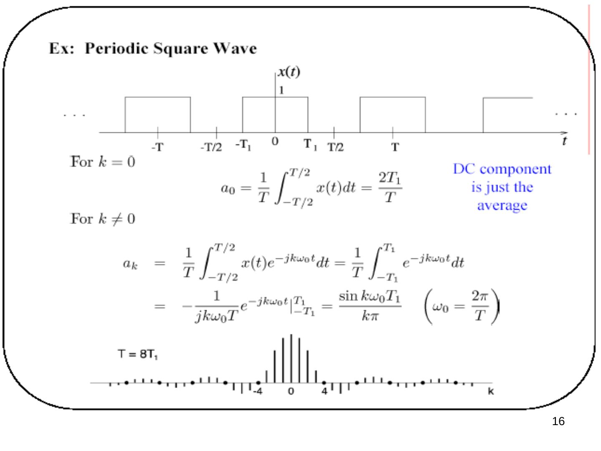
Periodic impulse train (important!)
x(t) = Σ (n = −∞…∞) δ(t − nT) — the sampling function, important for sampling.
ak = (1/T) ∫ (−T/2…T/2) δ(t) e^(−jkω0t) dt = 1/T for all k!
⇒ x(t) = (1/T) Σ e^(jkω0t): all components have (1) the same amplitude and (2) the same phase.
Dirichlet conditions for convergence
The Fourier series of a periodic signal x(t) converges if all of the following conditions are met:
- ∫T0 |x(t)| dt < ∞
- Finite number of discontinuities in a period T0
- Finite number of distinct maxima and minima in T0
- x(t) is single valued
These are sufficient, but not necessary, conditions, and they are usually satisfied in practice. When they are satisfied, the truncated Fourier series with a finite number (N) of terms is the best approximation to the original function, using the total squared-error magnitude over one period for comparison:
J = ∫T [x(t) − xN(t)]² dt, xN(t) = Σ (k = −N…N) ak e^(jkωt)
Properties of CT Fourier series
- Linearity: x(t) ↔ ak, y(t) ↔ bk ⇒ αx(t) + βy(t) ↔ αak + βbk
- Conjugate symmetry: x(t) real ⇒ a−k = ak*. With ak = Re{ak} + j Im{ak} = |ak| e^(j∠ak): Re{ak} is even and Im{ak} is odd, or |ak| is even and ∠ak is odd.
- Time shift: x(t − t0) ↔ ak e^(−jkω0t0) = ak e^(−jk2πt0/T) — introduces a linear phase shift ∝ t0.
Example — shift by half period: y(t) = x(t − T/2) ↔ ak e^(−jkπ) = (−1)ᵏ ak, using e^(−jkω0T/2) = e^(−jkπ). For the impulse train shifted by T/2, ak = 1/T, so y(t) ↔ (−1)ᵏ/T.
- Time reversal: y(t) = x(−t), the period T is unchanged: y(t) = Σ ak e^(−jkωt) = Σ a−m e^(jmωt) (substituting k = −m). So x(t) ↔ ak ⇒ x(−t) ↔ a−k. If x(t) is even, a−k = ak; if x(t) is odd, a−k = −ak.
- Time scaling: for a positive real α, x(αt) is periodic with period T/α and fundamental frequency αω: x(αt) = Σ ak e^(jk(αω)t). The Fourier coefficients have not changed but the Fourier series representation has changed.
- Parseval's relation (applies to power signals): P = (1/T) ∫T |x(t)|² dt = Σ (k = −∞…∞) |ak|² — average signal power equals the sum of the powers in the harmonics. Energy is the same whether measured in the time domain or in the frequency domain.
- Multiplication property: if x(t) ↔ ak and y(t) ↔ bk (both periodic with the same period T), then x(t)·y(t) ↔ ck = Σ (l = −∞…∞) al b(k−l) = ak ∗ bk. Proof: Σl al e^(jlω0t) · Σm bm e^(jmω0t) = Σ(l,m) al bm e^(j(l+m)ω0t) = (with l + m = k) Σk [Σl al b(k−l)] e^(jkω0t).
Periodic convolution
For x(t), y(t) periodic with period T, the ordinary convolution x(t) ∗ y(t) = ∫ (−∞…∞) x(τ) y(t − τ) dτ is not useful: e.g. if both x(t) and y(t) are positive, x(t) ∗ y(t) = ∞.
Periodic convolution: integrate over any one period (e.g. −T/2 to T/2):
z(t) = ∫ (−T/2…T/2) x(τ) y(t − τ) dτ = ∫ (−∞…∞) xT(τ) y(t − τ) dτ, where xT(t) = x(t) for −T/2 < t < T/2 and 0 otherwise.
Facts:
- z(t) is periodic with period T (for LTI systems x(t) = x(t + T) → y(t) = y(t + T); in the convolution treat y(t) as the input and xT(t) as h(t)).
- It doesn't matter over which period we integrate: z(t) = ∫T x(τ) y(t − τ) dτ = x(t) ⊗ y(t).
- Periodic convolution in time ⇔ multiplication in frequency: with x(t) ↔ ak, y(t) ↔ bk, z(t) ↔ ck,
ck = (1/T) ∫T z(t) e^(−jkω0t) dt = ∫T [(1/T) ∫T y(t − τ) e^(−jkω0(t−τ)) dt] x(τ) e^(−jkω0τ) dτ = ∫T bk x(τ) e^(−jkω0τ) dτ = T ak bk
Symmetry advantage
Products of even and odd signals
The product of even and odd signals is either even or odd:
- x(t) even, y(t) even ⇒ even: p(t) ≜ x(t)y(t) = x(−t)y(−t) = p(−t)
- x(t) even, y(t) odd ⇒ odd: p(t) = x(−t)[−y(−t)] = −p(−t)
- x(t) odd, y(t) even ⇒ odd: p(t) = [−x(−t)] y(−t) = −p(−t)
- x(t) odd, y(t) odd ⇒ even: p(t) = [−x(−t)][−y(−t)] = p(−t)
The same relations hold for discrete-time signals.
- Conceptually, the FS coefficients are integrals of products.
- The integral is nothing more than the area under the curve of this product.
- If the product is odd, the total area is zero.
- If the product is even, the total area is twice that of the left/right half.
Symmetry & FS coefficients
x(t) = a0 + 2 Σ [Bk cos(kωt) − Ck sin(kωt)]
Bk = (1/T0) ∫T0 x(t) cos(kωt) dt = (1/T0) ∫ (−T0/2…T0/2) xe(t) cos(kωt) dt = (2/T0) ∫ (0…T0/2) xe(t) cos(kωt) dt
Ck = −(1/T0) ∫T0 x(t) sin(kωt) dt = −(1/T0) ∫ (−T0/2…T0/2) xo(t) sin(kωt) dt = −(2/T0) ∫ (0…T0/2) xo(t) sin(kωt) dt
- Symmetry can simplify the calculation of the FS coefficients.
- If x(t) is even, Ck = 0.
- If x(t) is odd, Bk = 0.
- Each product within the non-zero integrals is even.
Worked examples (MATLAB plots)
Example: triangle waveform
What is the fundamental period of x(t)? What type of symmetry does the signal have? Find the trigonometric Fourier series coefficients. Plot the partial Fourier series sum for N = 1, 5, 10 & 50. Hint: ∫ t cos(ωt) dt = (1/ω²) cos(ωt) + (t/ω) sin(ωt) + C.
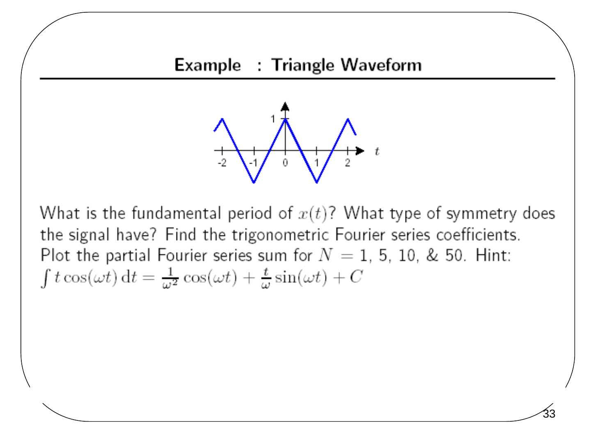
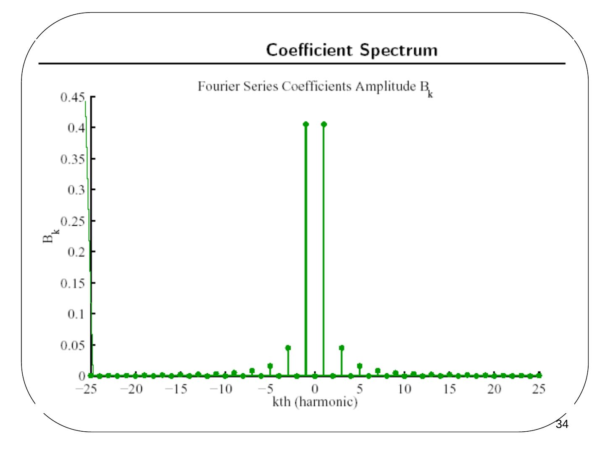
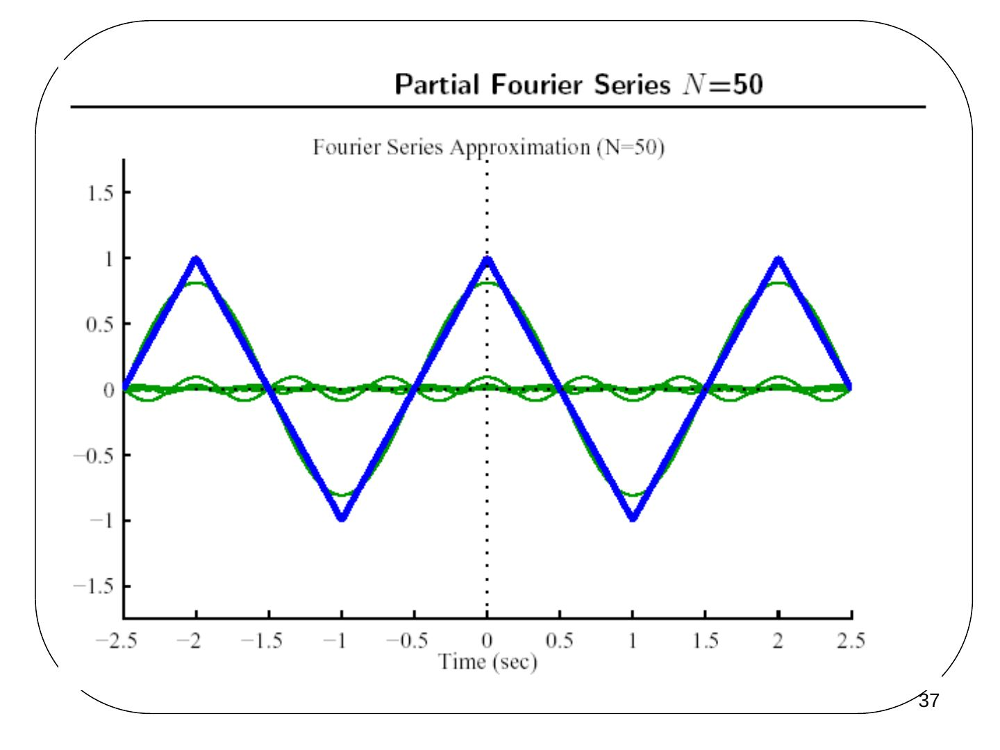
Example: pulse waveform
What is the fundamental period of x(t)? What type of symmetry does the signal have? Find the trigonometric Fourier series coefficients. Plot the partial Fourier series sum for N = 1, 5, 10, 25, 50 & 100.
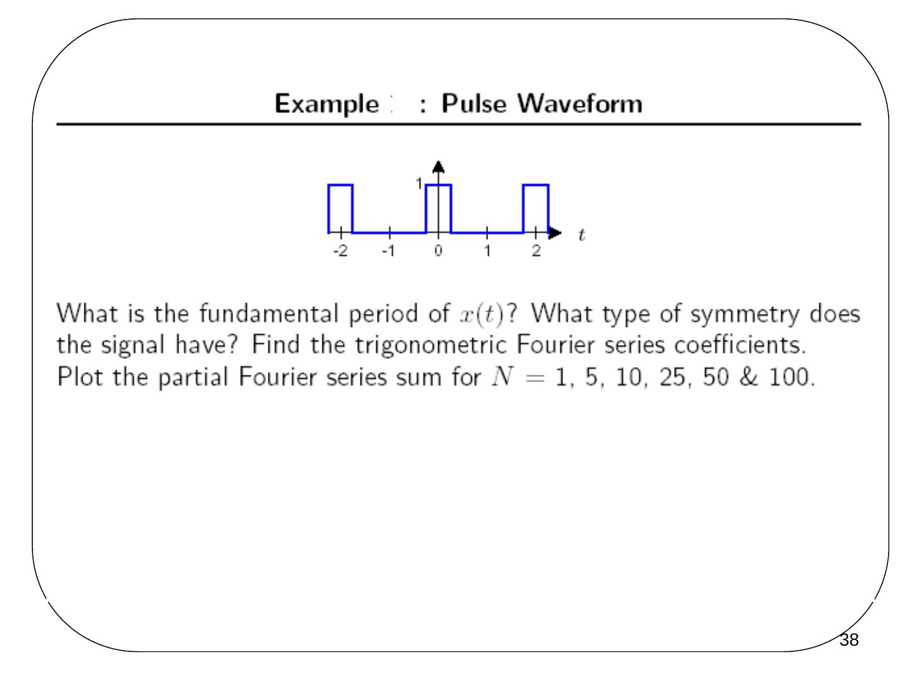
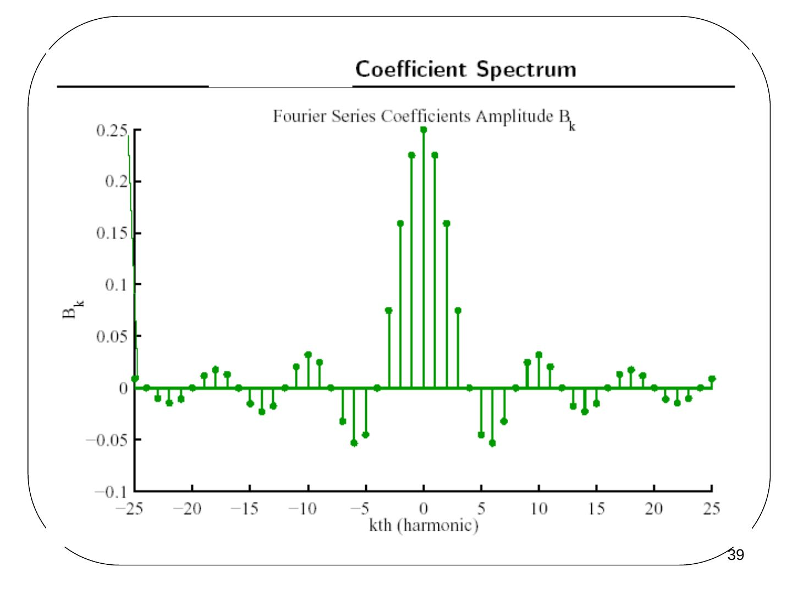
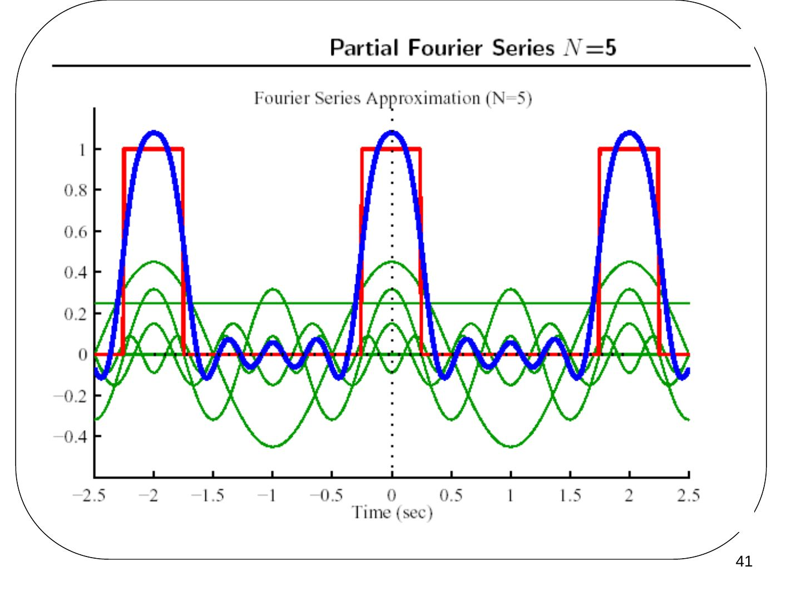
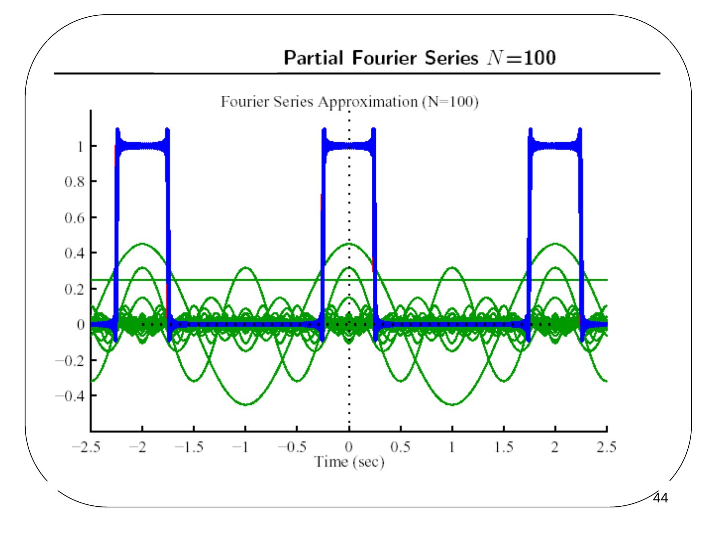
Gibbs phenomenon
- For finite Fourier series estimates there is apparent overshoot.
- As N increases, the edges become sharper and more accurate.
- The maximum overshoot (error) does not decrease as N → ∞.
- This is called Gibbs phenomenon.
Example: sawtooth waveform
What is the fundamental period of x(t)? What type of symmetry does the signal have? Find the trigonometric Fourier series coefficients. Plot the partial Fourier series sum for N = 1, 5, 10 & 50. Hints: ∫ t cos(ωt) dt = (1/ω²) cos(ωt) + (t/ω) sin(ωt) + C and ∫ t sin(ωt) dt = (1/ω²) sin(ωt) − (t/ω) cos(ωt) + C.
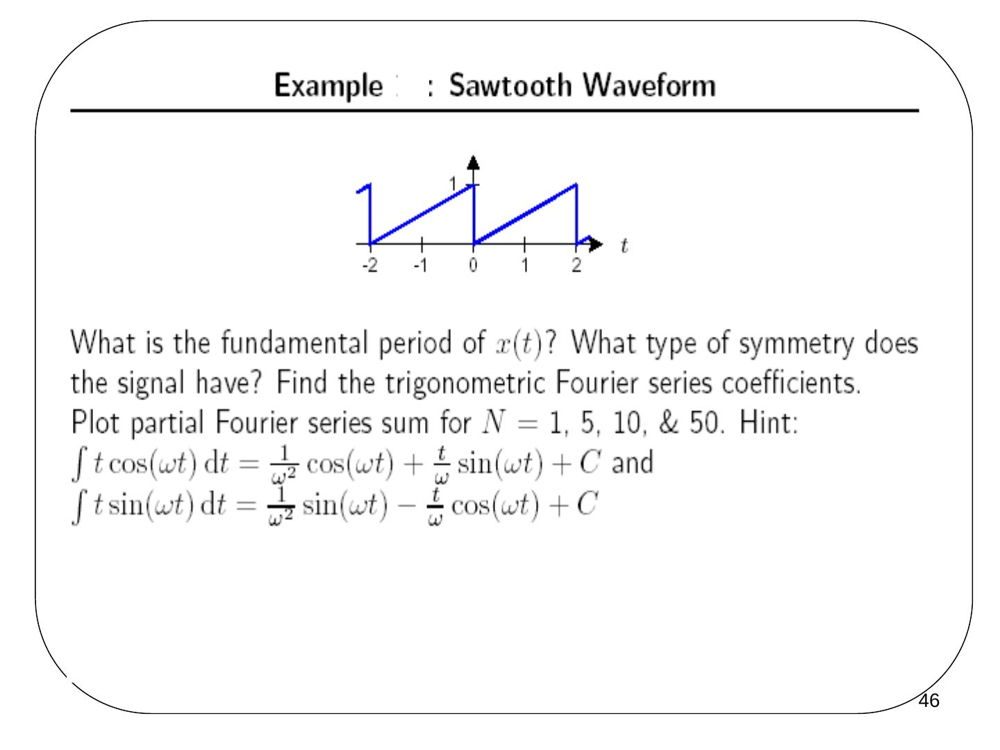
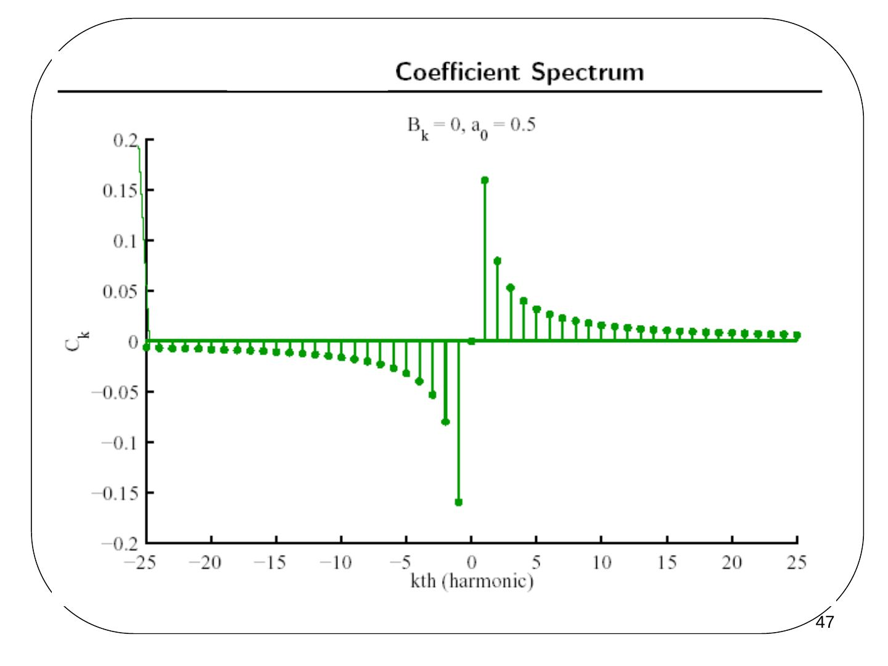
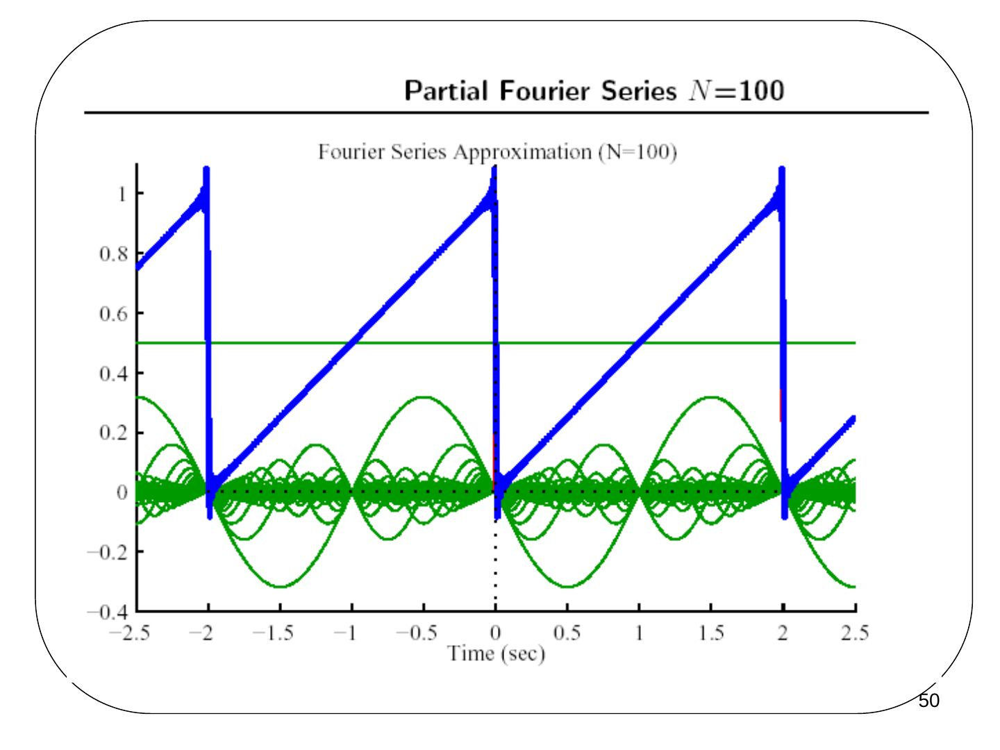